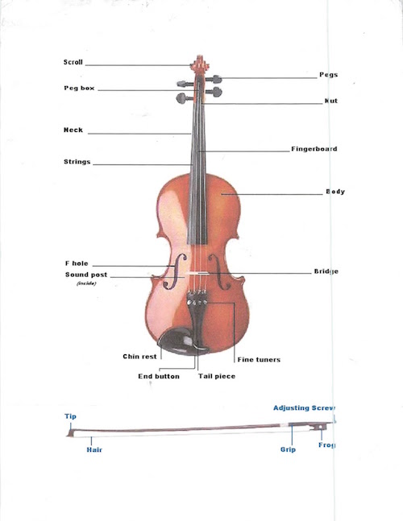

Violin Construction
The process of making a violin is long and arduous, but the results are a long-lasting wonder. The video below runs through the process.
The violin has many different parts to it. The picture below labels all the parts of the violin and bow.
